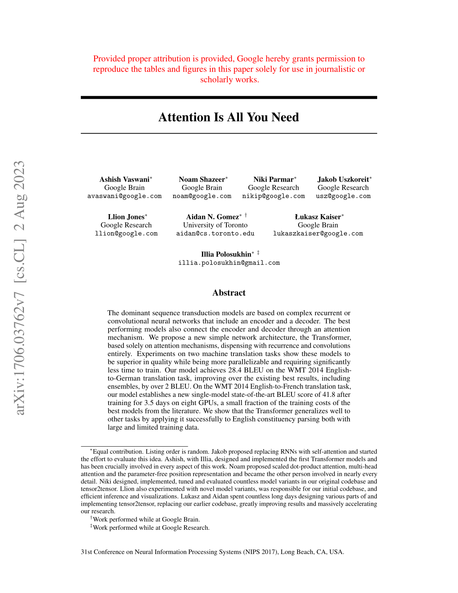
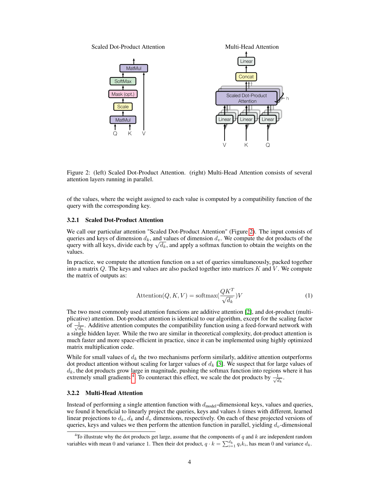
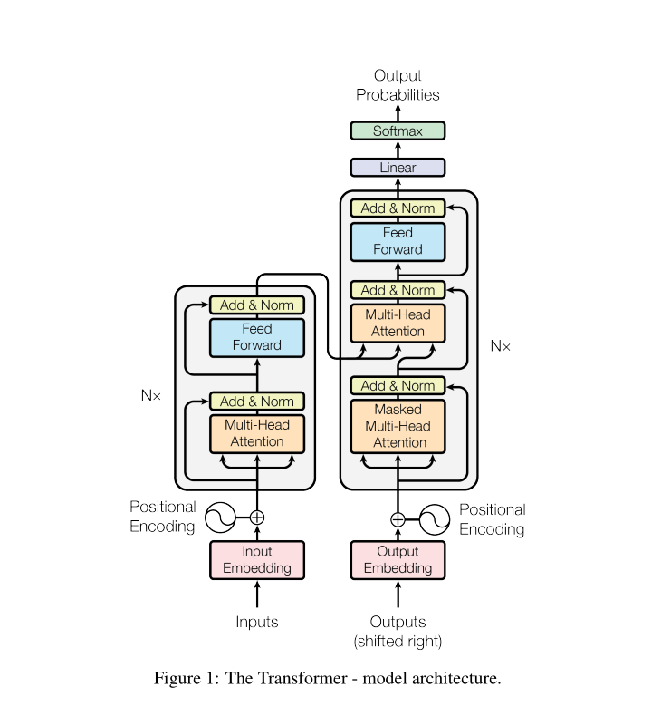
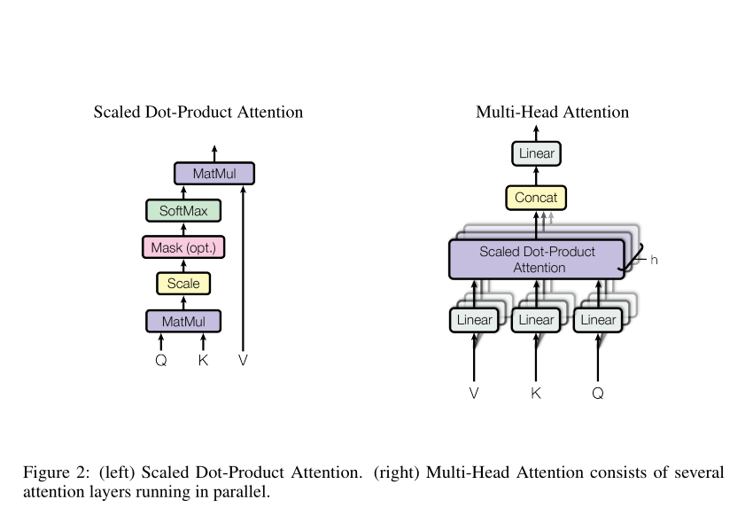

页面来自下载保存的 arXiv v7 PDF，不以生成内容替代原文。
REAL PAPER · REAL READING WORKFLOW
同一篇真实论文，两种阅读路径。
不再用重新编写的摘要代替论文。下面完整保留《Attention Is All You Need》前 5 页：先体验 Zotero 插件式选区翻译，再点击谷子学术“全文翻译”，观察同一原文如何进入连续双语阅读与线索关联。
官方 arXiv PDF
原始第 1–5 页
真实原文 · 对照译文
无改写正文


Pages
1—5ORIGINAL PDF
1—5ORIGINAL PDF
两个阅读场景使用完全相同的标题、正文、图表、公式与页码。
页面只展示交互重心差异，不宣称第三方产品缺少其已有能力。
在 Zotero 中，先面对的是 PDF 页面。
下面按本机 Translate for Zotero 2.4.5 还原插件式翻译：左侧文献库、中间真实 PDF、右侧选区与译文面板。点击第 2、4、5 页的黄色选区即可切换真实原文及对应中文。
PDF Attention Is All You Need.pdf
THE SHIFT
差异不只是换一个阅读器外壳。
保留原页作为证据
任何重排内容都能回到真实 PDF 页核对，不切断出处。
全文译文直接跟随原文
点击一次后，标题、段落与图注的中文依次插入，不需要逐个选择 PDF 片段。
把正文变成连续内容
标题、段落、图表和公式脱离翻页节奏，进入可调整的双语阅读排版。
把批注变成有来源的线索
线索携带页码、章节和内容类型，进入个人知识关系视图。
在谷子学术中，页面仍在，但阅读对象变成了内容与线索。
主阅读区只使用论文原文、原始公式和原图裁剪。点击工具栏“全文翻译”即可显示逐段中文；每段仍保留来源页码，并可继续收录进右侧个人知识库。
本地文献库
PDF Attention Is All You Need
正在翻译全文
0 / 0 段
REAL PDF CONTENTARXIV:1706.03762V7PAGES 1–5
Attention Is All You Need
标题译文 · PAGE 1
注意力机制就是你所需要的一切
内容边界：下面的英文正文直接取自论文前 5 页，并按章节连续排列；公式和图示保留原始内容。完整排版始终可以回到原页核对。
翻译说明：点击工具栏“全文翻译”后，中文会像正式客户端一样逐段插入原文下方。为保证静态 Demo 稳定，译文采用预置校对文本，用来展示双语排版和交互；它不是论文官方译文，也不伪装成一次实时模型调用。
ABSTRACT · SOURCE PAGE 1
The dominant sequence transduction models are based on complex recurrent or convolutional neural networks that include an encoder and a decoder. The best performing models also connect the encoder and decoder through an attention mechanism. We propose a new simple network architecture, the Transformer, based solely on attention mechanisms, dispensing with recurrence and convolutions entirely.
译文 · PAGE 1
主流的序列转换模型建立在复杂的循环神经网络或卷积神经网络之上，其中包含编码器和解码器。表现最好的模型还通过注意力机制连接编码器与解码器。我们提出了一种新的简单网络架构——Transformer，它完全基于注意力机制，彻底摒弃了循环与卷积。
Experiments on two machine translation tasks show these models to be superior in quality while being more parallelizable and requiring significantly less time to train. Our model achieves 28.4 BLEU on the WMT 2014 English-to-German translation task, improving over the existing best results, including ensembles, by over 2 BLEU.
译文 · PAGE 1
在两项机器翻译任务上的实验表明，这些模型不仅质量更高，而且并行化程度更好、训练时间显著更短。我们的模型在 WMT 2014 英德翻译任务上取得了 28.4 BLEU，相比包括集成模型在内的已有最佳结果提升了 2 个以上的 BLEU。
On the WMT 2014 English-to-French translation task, our model establishes a new single-model state-of-the-art BLEU score of 41.8 after training for 3.5 days on eight GPUs, a small fraction of the training costs of the best models from the literature. We show that the Transformer generalizes well to other tasks by applying it successfully to English constituency parsing both with large and limited training data.
译文 · PAGE 1
在 WMT 2014 英法翻译任务上，我们的模型使用 8 块 GPU 训练 3.5 天后，以 41.8 BLEU 刷新了单模型最佳成绩，训练成本仅为文献中最佳模型的一小部分。我们还将 Transformer 成功应用于大规模和有限训练数据条件下的英语成分句法分析，说明它能够很好地泛化到其他任务。
1 · INTRODUCTION · SOURCE PAGE 2
1 Introduction
Recurrent neural networks, long short-term memory [13] and gated recurrent [7] neural networks in particular, have been firmly established as state of the art approaches in sequence modeling and transduction problems such as language modeling and machine translation [35, 2, 5]. Numerous efforts have since continued to push the boundaries of recurrent language models and encoder-decoder architectures [38, 24, 15].
译文 · PAGE 2
循环神经网络，尤其是长短期记忆网络 [13] 和门控循环神经网络 [7]，已经牢固确立为语言建模、机器翻译等序列建模与转换问题中的先进方法 [35, 2, 5]。此后，大量工作持续推动循环语言模型和编码器—解码器架构的边界 [38, 24, 15]。
Recurrent models typically factor computation along the symbol positions of the input and output sequences. Aligning the positions to steps in computation time, they generate a sequence of hidden states ht, as a function of the previous hidden state ht−1 and the input for position t. This inherently sequential nature precludes parallelization within training examples, which becomes critical at longer sequence lengths, as memory constraints limit batching across examples.
译文 · PAGE 2
循环模型通常沿输入和输出序列中的符号位置分解计算。它们将位置与计算时间步对齐，并根据前一隐藏状态 ht−1 以及位置 t 的输入生成隐藏状态序列 ht。这种固有的顺序特性使单个训练样本内部无法并行；当序列较长、内存限制又压缩了跨样本批处理规模时，这一问题尤为关键。
Attention mechanisms have become an integral part of compelling sequence modeling and transduction models in various tasks, allowing modeling of dependencies without regard to their distance in the input or output sequences [2, 19]. In all but a few cases [27], however, such attention mechanisms are used in conjunction with a recurrent network.
译文 · PAGE 2
注意力机制已经成为多种任务中高性能序列建模与转换模型不可或缺的一部分，使模型能够不受输入或输出序列中距离的限制来刻画依赖关系 [2, 19]。然而，除少数情况外 [27]，这类注意力机制仍与循环网络结合使用。
In this work we propose the Transformer, a model architecture eschewing recurrence and instead relying entirely on an attention mechanism to draw global dependencies between input and output. The Transformer allows for significantly more parallelization and can reach a new state of the art in translation quality after being trained for as little as twelve hours on eight P100 GPUs.
译文 · PAGE 2
在本文中，我们提出了 Transformer：一种摒弃循环结构、完全依赖注意力机制来建立输入与输出之间全局依赖关系的模型架构。Transformer 能够实现显著更高的并行度，并且仅使用 8 块 P100 GPU 训练 12 小时便可达到新的翻译质量最佳水平。
REAL SOURCE CLUE · PAGE 2Global dependencies without recurrence
2 · BACKGROUND · SOURCE PAGE 2
2 Background
The goal of reducing sequential computation also forms the foundation of the Extended Neural GPU [16], ByteNet [18] and ConvS2S [9], all of which use convolutional neural networks as basic building block, computing hidden representations in parallel for all input and output positions.
译文 · PAGE 2
减少顺序计算这一目标也是 Extended Neural GPU [16]、ByteNet [18] 和 ConvS2S [9] 的基础。这些模型都以卷积神经网络为基本构件，并行计算所有输入和输出位置的隐藏表示。
In these models, the number of operations required to relate signals from two arbitrary input or output positions grows in the distance between positions, linearly for ConvS2S and logarithmically for ByteNet. This makes it more difficult to learn dependencies between distant positions [12]. In the Transformer this is reduced to a constant number of operations, albeit at the cost of reduced effective resolution due to averaging attention-weighted positions, an effect we counteract with Multi-Head Attention as described in section 3.2.
译文 · PAGE 2
在这些模型中，关联任意两个输入或输出位置的信号所需的操作次数会随位置间距离增加：ConvS2S 呈线性增长，ByteNet 呈对数增长。这使远距离位置之间的依赖关系更难学习 [12]。Transformer 将其降为常数次操作，但由于对注意力加权位置取平均，有效分辨率会有所下降；我们通过第 3.2 节所述的多头注意力来抵消这一影响。
Self-attention, sometimes called intra-attention is an attention mechanism relating different positions of a single sequence in order to compute a representation of the sequence. Self-attention has been used successfully in a variety of tasks including reading comprehension, abstractive summarization, textual entailment and learning task-independent sentence representations [4, 27, 28, 22].
译文 · PAGE 2
自注意力有时也称内部注意力，它通过关联单个序列中的不同位置来计算该序列的表示。自注意力已成功应用于阅读理解、抽象式摘要、文本蕴含以及学习与任务无关的句子表示等多种任务 [4, 27, 28, 22]。
To the best of our knowledge, however, the Transformer is the first transduction model relying entirely on self-attention to compute representations of its input and output without using sequence-aligned RNNs or convolution.
译文 · PAGE 2
然而，据我们所知，Transformer 是第一个完全依赖自注意力来计算输入和输出表示、而不使用与序列对齐的循环神经网络或卷积的转换模型。
3 · MODEL ARCHITECTURE · SOURCE PAGES 2–3
3 Model Architecture
Most competitive neural sequence transduction models have an encoder-decoder structure [5, 2, 35]. Here, the encoder maps an input sequence of symbol representations (x1, ..., xn) to a sequence of continuous representations z = (z1, ..., zn). Given z, the decoder then generates an output sequence (y1, ..., ym) of symbols one element at a time.
译文 · PAGES 2–3
大多数具有竞争力的神经序列转换模型都采用编码器—解码器结构 [5, 2, 35]。其中，编码器将符号表示的输入序列 (x1, ..., xn) 映射为连续表示序列 z = (z1, ..., zn)。给定 z 后，解码器每次生成一个符号，从而产生输出序列 (y1, ..., ym)。

图注译文 · PAGE 3
图 1：Transformer 模型架构。
REAL SOURCE FIGURE · PAGE 3Figure 1 · Encoder and decoder stacks
3.1 Encoder and Decoder Stacks
Encoder: The encoder is composed of a stack of N = 6 identical layers. Each layer has two sub-layers. The first is a multi-head self-attention mechanism, and the second is a simple, position-wise fully connected feed-forward network. We employ a residual connection [11] around each of the two sub-layers, followed by layer normalization [1].
译文 · PAGE 3
编码器：编码器由 N = 6 个相同层堆叠而成。每一层包含两个子层：第一个是多头自注意力机制，第二个是简单的逐位置全连接前馈网络。我们在两个子层周围都采用残差连接 [11]，随后进行层归一化 [1]。
Decoder: The decoder is also composed of a stack of N = 6 identical layers. In addition to the two sub-layers in each encoder layer, the decoder inserts a third sub-layer, which performs multi-head attention over the output of the encoder stack. Similar to the encoder, we employ residual connections around each of the sub-layers, followed by layer normalization.
译文 · PAGE 3
解码器：解码器同样由 N = 6 个相同层堆叠而成。除编码器每层所含的两个子层外，解码器还插入第三个子层，对编码器堆栈的输出执行多头注意力。与编码器类似，我们在每个子层周围采用残差连接，随后进行层归一化。
3.2 · ATTENTION · SOURCE PAGES 3–4
3.2 Attention
An attention function can be described as mapping a query and a set of key-value pairs to an output, where the query, keys, values, and output are all vectors. The output is computed as a weighted sum of the values, where the weight assigned to each value is computed by a compatibility function of the query with the corresponding key.
译文 · PAGES 3–4
注意力函数可以描述为：将一个查询和一组键—值对映射为一个输出，其中查询、键、值和输出均为向量。输出是对各个值的加权求和，而分配给每个值的权重由查询与相应键之间的相容性函数计算得到。

图注译文 · PAGE 4
图 2：左侧为缩放点积注意力；右侧的多头注意力由多个并行运行的注意力层构成。
3.2.1 Scaled Dot-Product Attention
We call our particular attention “Scaled Dot-Product Attention” (Figure 2). The input consists of queries and keys of dimension dk, and values of dimension dv. We compute the dot products of the query with all keys, divide each by √dk, and apply a softmax function to obtain the weights on the values.
译文 · PAGE 4
我们将所采用的注意力称为“缩放点积注意力”（图 2）。输入由维度为 dk 的查询和键以及维度为 dv 的值组成。我们计算查询与所有键的点积，将每个点积除以 √dk，再应用 softmax 函数得到作用于各个值的权重。
In practice, we compute the attention function on a set of queries simultaneously, packed together into a matrix Q. The keys and values are also packed together into matrices K and V. We compute the matrix of outputs as:
译文 · PAGE 4
在实践中，我们同时对一组查询计算注意力函数，并将这些查询打包为矩阵 Q。键和值也分别打包为矩阵 K 和 V。输出矩阵按下式计算：
Attention(Q, K, V) = softmax(QKT / √dk)V (1)
While for small values of dk the two mechanisms perform similarly, additive attention outperforms dot product attention without scaling for larger values of dk [3]. We suspect that for large values of dk, the dot products grow large in magnitude, pushing the softmax function into regions where it has extremely small gradients. To counteract this effect, we scale the dot products by 1/√dk.
译文 · PAGE 4
当 dk 较小时，两种机制表现相近；但当 dk 较大时，加性注意力优于未缩放的点积注意力 [3]。我们推测，dk 较大时点积的幅值会增大，使 softmax 进入梯度极小的区域。为抵消这一影响，我们用 1/√dk 对点积进行缩放。
REAL SOURCE EQUATION · PAGE 4Equation 1 · Scaled Dot-Product Attention
3.2.2 · MULTI-HEAD ATTENTION · SOURCE PAGES 4–5
3.2.2 Multi-Head Attention
Instead of performing a single attention function with dmodel-dimensional keys, values and queries, we found it beneficial to linearly project the queries, keys and values h times with different, learned linear projections to dk, dk and dv dimensions, respectively.
译文 · PAGES 4–5
与其使用维度为 dmodel 的键、值和查询执行一次注意力函数，我们发现，更有效的做法是使用不同的可学习线性投影，将查询、键和值分别投影 h 次，得到维度为 dk、dk 和 dv 的表示。
Multi-head attention allows the model to jointly attend to information from different representation subspaces at different positions. With a single attention head, averaging inhibits this.
译文 · PAGE 5
多头注意力使模型能够同时关注不同位置、不同表示子空间中的信息。若只使用单个注意力头，求平均的过程会抑制这种能力。
MultiHead(Q, K, V) = Concat(head1, ..., headh)WO
In this work we employ h = 8 parallel attention layers, or heads. For each of these we use dk = dv = dmodel/h = 64. Due to the reduced dimension of each head, the total computational cost is similar to that of single-head attention with full dimensionality.
译文 · PAGE 5
本文采用 h = 8 个并行注意力层，即 8 个头。每个头使用 dk = dv = dmodel/h = 64。由于每个头的维度降低，总计算成本与一个使用完整维度的单头注意力相近。
REAL SOURCE CLUE · PAGE 5Different representation subspaces at different positions
3.2.3 · APPLICATIONS · SOURCE PAGE 5
3.2.3 Applications of Attention in our Model
The Transformer uses multi-head attention in three different ways:
译文 · PAGE 5
Transformer 以三种不同方式使用多头注意力：
- In “encoder-decoder attention” layers, the queries come from the previous decoder layer, and the memory keys and values come from the output of the encoder. This allows every position in the decoder to attend over all positions in the input sequence.译文 · PAGE 5
在“编码器—解码器注意力”层中，查询来自前一个解码器层，记忆中的键和值来自编码器的输出。因此，解码器中的每个位置都可以关注输入序列的所有位置。
- The encoder contains self-attention layers. In a self-attention layer all of the keys, values and queries come from the same place, in this case, the output of the previous layer in the encoder.译文 · PAGE 5
编码器包含自注意力层。在自注意力层中，所有键、值和查询都来自同一个位置；此处即编码器前一层的输出。
- Similarly, self-attention layers in the decoder allow each position in the decoder to attend to all positions in the decoder up to and including that position.译文 · PAGE 5
类似地，解码器中的自注意力层允许解码器的每个位置关注解码器中截至该位置（包括该位置）的所有位置。
3.3–3.4 · SOURCE PAGE 5
3.3 Position-wise Feed-Forward Networks
In addition to attention sub-layers, each of the layers in our encoder and decoder contains a fully connected feed-forward network, which is applied to each position separately and identically. This consists of two linear transformations with a ReLU activation in between.
译文 · PAGE 5
除了注意力子层之外，编码器和解码器的每一层还包含一个全连接前馈网络，该网络以相同方式分别作用于每个位置。它由两个线性变换构成，中间使用 ReLU 激活。
FFN(x) = max(0, xW1 + b1)W2 + b2 (2)
While the linear transformations are the same across different positions, they use different parameters from layer to layer. Another way of describing this is as two convolutions with kernel size 1. The dimensionality of input and output is dmodel = 512, and the inner-layer has dimensionality dff = 2048.
译文 · PAGE 5
这些线性变换在不同位置上相同，但不同层使用不同参数。也可以把它描述为两个卷积核大小为 1 的卷积。输入和输出维度为 dmodel = 512，内层维度为 dff = 2048。
3.4 Embeddings and Softmax
Similarly to other sequence transduction models, we use learned embeddings to convert the input tokens and output tokens to vectors of dimension dmodel. We also use the usual learned linear transformation and softmax function to convert the decoder output to predicted next-token probabilities.
译文 · PAGE 5
与其他序列转换模型类似，我们使用学习得到的嵌入，将输入词元和输出词元转换为维度为 dmodel 的向量。我们还使用常规的学习线性变换和 softmax 函数，将解码器输出转换为下一个词元的预测概率。
Source: Vaswani et al., “Attention Is All You Need,” arXiv:1706.03762v7. The full first five pages are available through every “原页” control and the excerpt PDF. The reflow view preserves source wording while omitting page furniture such as repeated running elements; the original PDF remains the visual source of truth.
围绕 PDF 选区阅读、翻译与批注
阅读对象保留论文原始页面，在页内选择、高亮和记录。
翻译方式选中 PDF 内容后，在 Translate for Zotero 侧栏查看源文本与结果。
回到出处批注天然指向 PDF 页与选区。
整理重心文献条目、集合、标签、笔记与附件。
在原页证据之上增加连续双语阅读与线索关系
阅读对象同一 PDF 被组织为连续的标题、正文、图表和公式。
翻译方式点击“全文翻译”，中文逐段插入原文下方，公式与来源页码保持可见。
回到出处每个内容单元与线索都保留原始页码，可随时核对。
整理重心把阅读中留下的真实线索继续连接到个人知识关系中。
这不是“Zotero 能做什么 / 不能做什么”的完整功能评测。Zotero 的翻译效果来自第三方插件工作流，具体服务与质量取决于用户配置；本 Demo 对比的是选区侧栏翻译与谷子学术整篇连续双语阅读的交互重心。
KEEP THE SOURCE · CONNECT THE CLUES
返回谷子学术内测页